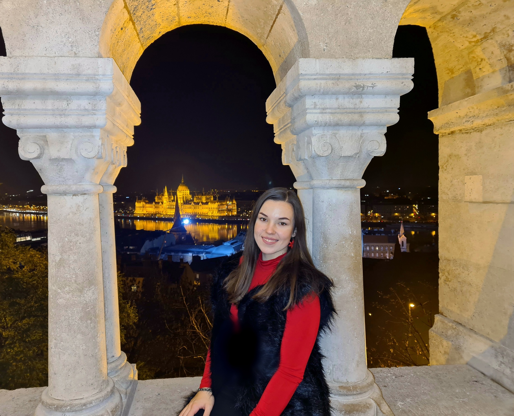

Bemutatkozás
Gróf Lilla Anna vagyok,
elsőéves hallgató a Budapesti Műszaki-és Gazdaságtudományi Egyetem gépészmérnöki szakán.
Kedvenc elfoglaltságaim közé tartozik a sütés és a fotózás.
Legtöbbször ezt a két hobbimat egyszerre csinálhatom, mivel a kész édességet mindig megörökítem.
Emellett a természetet,az állatokat és a növényeket is szívesen fotózom.
